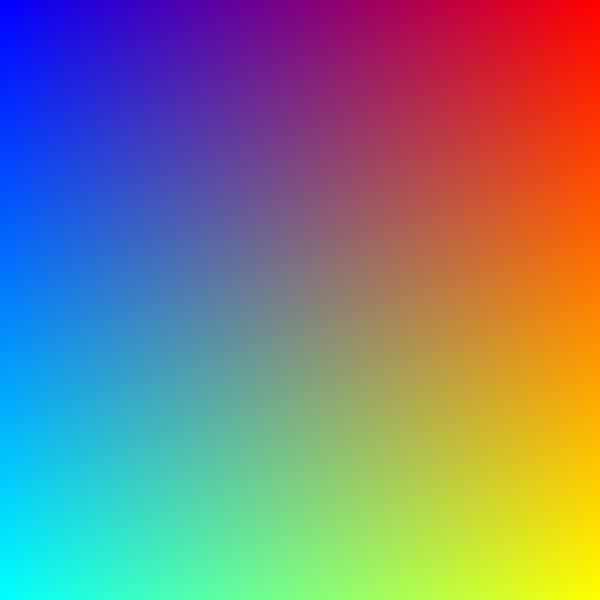

Chapter 2 of this book covered using typical JavaScript data types when moving data to and from C++ addons. Node.js introduces a new data type, Buffer, which is not found in standard JavaScript (although new versions of JavaScript now have typed arrays, which provide much of the same functionality). Node.js Buffer objects are used to represent raw binary data, similar to a C++ array (in this case, integer array). Whenever you work with Node.js file I/O or TCP you are likely going to work with Buffer objects. While it is common to convert Buffer objects to JavaScript strings (by specifying the encoding of the integer data), often times you may wish to operate directly on the binary data as well.
Buffer objects are an interesting aspect OF C++ addon development, first because they are in fact not part of V8 - but part of Node.js. Secondly, Buffer object data is unique in that it is not allocated inside the V8 heap - an attribute that can allow us to sidestep some data copying when dealing with C++ addons and worker threads (which will be discussed below).
In this section, we'll look at how Buffer objects can be passed to and from C++ addons using NAN. NAN is used because the Buffer object API has actually undergone some significant changes recently, and NAN will shield us from these issues. We'll look at Buffer objects through the lens of an image converter - specifically converting binary png image data into bitmap formatted binary data.
All of the code for this section is available in full in the nodecpp-demo repository at https://github.com/freezer333/nodecpp-demo, under the "Buffers" section.
Image processing, in general, is anything that manipulates/transforms an image. An image of course is a big chunk of binary data - in it's most basic state an integer (or 3 or 4) can be used to represent each pixel in an image, and those integers can be stored in a file or held in a contiguously allocated array. Typically image data is not held in raw data form though, it's compressed/encoded into a image format standard such as png, gif, bmp, jpeg, and others.
Image processing is a good candidate for C++ addons, as image processing can often be time consuming, CPU intensive, and some processing technique have parallelism that C++ can exploit. For the example we'll look at now, we'll simply convert png formatted data into bmp formatted data[1]. There are a good number of existing, open source C++ libraries that can help us with this task, I'm going to use LodePNG as it is dependency free and quite simple to use. LodePNG can be found at http://lodev.org/lodepng/, and it's source code is at https://github.com/lvandeve/lodepng. Many thanks to the developer, Lode Vandevenne for providing such an easy to use library!
For this addon, we'll create the following directory structure, which includes source code downloaded from https://github.com/lvandeve/lodepng, namely lodepng.h and lodepng.cpp.
/png2bmp
|
|--- binding.gyp
|--- package.json
|--- png2bmp.cpp # the addon
|--- index.js # program to test the addon
|--- sample.png # input (will be converted to bmp)
|--- lodepng.h # from lodepng distribution
|--- lodepng.cpp # From loadpng distribution
To download the complete addon, head over to https://github.com/freezer333/nodecpp-demo, this particular example is in the buffers directory.
lodepng.cpp contains all the necessary code for doing image processing, and I will not discuss it's working in detail. In addition, the lodepng distribution contains sample code that allows you to specifically convert between png and bmp - I've adapted it slightly, and will put it in the addon source code file png2bmp.cpp which we will take a look at shortly. Let's first look at what the actual JavaScript program looks like though - before diving into the addon code itself:
'use strict';
const fs = require('fs');
const path = require('path');
const png2bmp = require('./build/Release/png2bmp');
var png_file = process.argv[2];
var bmp_file = path.basename(png_file, '.png') + ".bmp";
var png_buffer = fs.readFileSync(png_file);
png2bmp.saveBMP(bmp_file, png_buffer, png_buffer.length);
This program simply requires fs, path, and our addon, which will be located at ./build/Releast/png2bmp. The program grabs an input (png) filename from the command line arguments and reads the png into a Buffer. It then sends the Buffer into the addon, which saves the converted BMP to the filename as specified. Thus, the addon is converting png to BMP and saving the results to a file - returning nothing.
Here's the package.json, which is setting up npm start to invoke the index.js program with a command line argument of sample.png. It's a pretty generic image:
{
"name": "png2bmp",
"version": "0.0.1",
"private": true,
"gypfile": true,
"scripts": {
"start": "node index.js sample.png"
},
"dependencies": {
"nan": "*"
}
}

Finally, let's take a look at the binding.gyp file - which is fairly standard, other than the presence of a few compiler flags needed to compile lodepng. It also includes the requisite references to NAN.
{
"targets": [
{
"target_name": "png2bmp",
"sources": [ "png2bmp.cpp", "lodepng.cpp" ],
"cflags": ["-Wall", "-Wextra", "-pedantic", "-ansi", "-O3"],
"include_dirs" : ["<!(node -e \"require('nan')\")"]
}
]
}
png2bmp.cpp will mostly contain V8/NAN code, however it does have one image processing utility function - do_convert, adapted from lodepng's png to bmp example code. The function accepts a vector<unsigned char> containing input data (png format) and a vector<unsigned char> to put it's output (bmp format) data into. That function in turn calls encodeBMP, which is straight from the lodepng examples. Here is the full code listing of these two functions. The details are not important to understanding addon Buffer objects, but are included here for completeness. Our addon entry point(s) will call do_convert.
/*
ALL LodePNG code in this file is adapted from lodepng's
examples, found at the following URL:
https://github.com/lvandeve/lodepng/blob/
master/examples/example_bmp2png.cpp'
*/
void encodeBMP(std::vector<unsigned char>& bmp,
const unsigned char* image, int w, int h)
{
//3 bytes per pixel used for both input and output.
int inputChannels = 3;
int outputChannels = 3;
//bytes 0-13
bmp.push_back('B'); bmp.push_back('M'); //0: bfType
bmp.push_back(0); bmp.push_back(0);
bmp.push_back(0); bmp.push_back(0);
bmp.push_back(0); bmp.push_back(0); //6: bfReserved1
bmp.push_back(0); bmp.push_back(0); //8: bfReserved2
bmp.push_back(54 % 256);
bmp.push_back(54 / 256);
bmp.push_back(0); bmp.push_back(0);
//bytes 14-53
bmp.push_back(40); bmp.push_back(0);
bmp.push_back(0); bmp.push_back(0); //14: biSize
bmp.push_back(w % 256);
bmp.push_back(w / 256);
bmp.push_back(0); bmp.push_back(0); //18: biWidth
bmp.push_back(h % 256);
bmp.push_back(h / 256);
bmp.push_back(0); bmp.push_back(0); //22: biHeight
bmp.push_back(1); bmp.push_back(0); //26: biPlanes
bmp.push_back(outputChannels * 8);
bmp.push_back(0); //28: biBitCount
bmp.push_back(0); bmp.push_back(0);
bmp.push_back(0); bmp.push_back(0); //30: biCompression
bmp.push_back(0); bmp.push_back(0);
bmp.push_back(0); bmp.push_back(0); //34: biSizeImage
bmp.push_back(0); bmp.push_back(0);
bmp.push_back(0); bmp.push_back(0); //38: biXPelsPerMeter
bmp.push_back(0); bmp.push_back(0);
bmp.push_back(0); bmp.push_back(0); //42: biYPelsPerMeter
bmp.push_back(0); bmp.push_back(0);
bmp.push_back(0); bmp.push_back(0); //46: biClrUsed
bmp.push_back(0); bmp.push_back(0);
bmp.push_back(0); bmp.push_back(0); //50: biClrImportant
int imagerowbytes = outputChannels * w;
//must be multiple of 4
imagerowbytes = imagerowbytes % 4 == 0 ? imagerowbytes :
imagerowbytes + (4 - imagerowbytes % 4);
for(int y = h - 1; y >= 0; y--)
{
int c = 0;
for(int x = 0; x < imagerowbytes; x++)
{
if(x < w * outputChannels)
{
int inc = c;
//Convert RGB(A) into BGR(A)
if(c == 0) inc = 2;
else if(c == 2) inc = 0;
bmp.push_back(image[inputChannels
* (w * y + x / outputChannels) + inc]);
}
else bmp.push_back(0);
c++;
if(c >= outputChannels) c = 0;
}
}
// Fill in the size
bmp[2] = bmp.size() % 256;
bmp[3] = (bmp.size() / 256) % 256;
bmp[4] = (bmp.size() / 65536) % 256;
bmp[5] = bmp.size() / 16777216;
}
bool do_convert(
std::vector<unsigned char> & input_data,
std::vector<unsigned char> & bmp)
{
std::vector<unsigned char> image; //the raw pixels
unsigned width, height;
unsigned error = lodepng::decode(image, width,
height, input_data, LCT_RGB, 8);
if(error) {
std::cout << "error " << error << ": "
<< lodepng_error_text(error)
<< std::endl;
return false;
}
encodeBMP(bmp, &image[0], width, height);
return true;
}
Sorry... that listing was long, but it's important to see what's actually going on! Let's get to work bridging all this code to JavaScript.
Our first task is to create the saveBMP addon function, which accepts a filename (destination BMP) along with the png data. The png image data is actually read when we are in JavaScript, so it's passed in as a Node.js Buffer. The first rule to recognize is that Buffer is unknown to V8, it's a Node.js construct. We'll use NAN to access the buffer itself (and later create new Buffer objects). Whenever Buffer objects are passed to C++ addons, it is necessary to specify it's length as an added parameter, as it's difficult to ascertain the actual data length of a Buffer from C++.
Let's set up the first function call in NAN:
NAN_METHOD(SaveBMP) {
v8::String::Utf8Value val(info[0]->ToString());
std::string outfile (*val);
....
}
NAN_MODULE_INIT(Init) {
Nan::Set(target,
New<String>("saveBMP").ToLocalChecked(),
GetFunction(New<FunctionTemplate>(SaveBMP))
.ToLocalChecked());
}
NODE_MODULE(basic_nan, Init)
In SaveBMP, the first step we do is a simple extraction of the output filename. Next, we must extract the binary data (which will be represented by unsigned char data).
unsigned char* buffer =
(unsigned char*) node::Buffer::Data(info[1]->ToObject());
unsigned int size = info[2]->Uint32Value();
Notice just how easy this is... Node.js provides a static Data method on the Buffer class that accepts a standard v8::Object handle and returns an unsigned char pointer to the underlying data. This pointer does NOT point to data managed by V8 recall - it's on the normal C++ heap and can be worked with as such. We also extract the size from the third argument to the addon function.
Often in C++ we prefer to deal with STL containers rather than raw memory arrays, so we can easily create a vector from this pointer - which we need to do in order to call do_convert. Below is the full code listing - which converts the buffer's data pointer to a vector, calls do_convert which works it's magic to fill in bmp data into the vector we give it, and finally saves it to the desired output file (using a lodepng utility call - save_file).
NAN_METHOD(SaveBMP) {
v8::String::Utf8Value val(info[0]->ToString());
std::string outfile (*val);
// Convert the Node.js Buffer into a C++ Vector
unsigned char*buffer =
(unsigned char*) node::Buffer::Data(info[1]->ToObject());
unsigned int size = info[2]->Uint32Value();
std::vector<unsigned char> png_data(buffer, buffer + size);
// Convert to bmp, stored in another vector.
std::vector<unsigned char> bmp;
if ( do_convert(png_data, bmp)) {
info.GetReturnValue().Set(Nan::New(false));
}
else {
lodepng::save_file(bmp, outfile);
info.GetReturnValue().Set(Nan::New(true));
}
}
Run this program by doing an npm install and then an npm start and you'll see a sample.bmp generated that looks eerily similar to sample.png, just a whole lot bigger (bmp compression is far less efficient than png).
This addon would be a lot more flexible if we simply returned the bitmap image data, rather than needing to save it to a file while within C++. To do this, we must learn how to return Buffer objects. This concept, on the surface, seems easy enough - you can look at examples on NAN's website to see new Buffers being created in C++ and returned to JavaScript. Upon closer look though, there are some issues we must be careful with, which we'll tackle here.
Let's create a new addon entry point - getBMP - which would be called from JavaScript like so:
...
var png_buffer = fs.readFileSync(png_file);
bmp_buffer = png2bmp.getBMP(png_buffer, png_buffer.length);
fs.writeFileSync(bmp_file, bmp_buffer);
In the original C++ function, we called do_convert which put the bitmap data into a vector<unsigned int> which we wrote to a file. Now we must return that data, by constructing a new Buffer object. NAN's NewBuffer call aptly does the trick here - let's look at a first draft of the addon function:
void buffer_delete_callback(char* data, void* hint) {
free(data);
}
NAN_METHOD(GetBMP) {
unsigned char*buffer =
(unsigned char*) node::Buffer::Data(info[0]->ToObject());
unsigned int size = info[1]->Uint32Value();
std::vector<unsigned char> png_data(buffer, buffer + size);
std::vector<unsigned char> bmp = vector<unsigned char>();
if ( do_convert(png_data, bmp)) {
info.GetReturnValue().Set(
NewBuffer((char *)bmp.data(),
bmp.size(), buffer_delete_callback, 0)
.ToLocalChecked());
}
}
The code example above follows what most tutorials online advocate. We call NewBuffer with a char * (which we grab from the bmp vector using the data method), the size of the amount of memory we are creating the buffer out of, and then 2 additional parameters that might raise your curiosity. The 3rd parameter to NewBuffer is a callback - which ends up being called when the Buffer you are creating gets garbage collected by V8. Recall, Buffers are JavaScript objects, whose data is stored outside V8 - but the object itself is under V8's control. From this perspective, it should make sense that a callback would be handy - when V8 destroys the buffer, we need some way of freeing up the data we have created - which is passed into the callback as it's first parameter. The signature of the callback is defined by NAN - Nan::FreeCallback(). The seconds parameter is a hint to aid in deallocation, we can use it however we want. It will be helpful soon, but for now we just pass null (0).
So - here is the problem with this code: The data contained in the buffer we return is likely deleted before our JavaScript gets to use it. Why? If you understand C++ well, you likely already see the problem: the bmp vector is going to go out of scope as our GetBMP function returns. C++ vector semantics hold that when the vector goes out of scope, the vector's destructor will delete all data within the vector - in this case, our bmp data! This is a huge problem, since the Buffer we send back to JavaScript will have it's data deleted out from under it. You might get away with this (race conditions are fun right?), but it wil eventually cause your program to crash.
How do we get around this? One method is to create a Buffer containing a copy of the bmp vector's data. We could do this like so:
if ( do_convert(png_data, bmp)) {
info.GetReturnValue().Set(
CopyBuffer(
(char *)bmp.data(),
bmp.size()).ToLocalChecked());
}
This indeed is safe, but it involves creating a copy of the data - slow and memory wasting... One way to avoid this whole mess is not to use a vector, and store the bitmap data in a dynamically allocated char * array - however that makes the bitmap conversion code a lot more cumbersome. Thankfully, the answer to this problem, which allows us to still use vectors, is suggested by the the Nan::FreeCallback call signature - namely the hint parameter. Since our problem is that the vector containing bitmap data goes out of scope, we can instead dynamically allocate the vector itself, and pass it into the free callback, where it can be properly deleted when the Buffer has been garbage collected. Below is the completed solution - take careful note now that we are utilizing the hint parameter in our callback, and that we are using a dynamically allocated (heap) vector instead of a stack variable.
void buffer_delete_callback(char* data, void* the_vector) {
delete reinterpret_cast<vector<unsigned char> *> (the_vector);
}
NAN_METHOD(GetBMP) {
unsigned char*buffer =
(unsigned char*) node::Buffer::Data(info[0]->ToObject());
unsigned int size = info[1]->Uint32Value();
std::vector<unsigned char> png_data(buffer, buffer + size);
// allocate the vector on the heap because we
// are building a buffer out of it's data to
// return to Node - and don't want to allow
// it to go out of scope until the buffer
// does (see buffer_delete_callback).
std::vector<unsigned char> * bmp = new vector<unsigned char>();
if ( do_convert(png_data, *bmp)) {
info.GetReturnValue().Set(
NewBuffer((char *)bmp->data(),
bmp->size(), buffer_delete_callback, bmp)
.ToLocalChecked());
}
}
When you run the program, JavaScript will now safely be able to operate on the returned Buffer without needing to worry about vector deleting the memory.
Reading the segment above, you might recall a discussion in Chapter 4 regarding V8 memory and worker threads. We had a significant issue when using asynchronous addons, in that C++ threads created to do the asynchronous work could never access V8 data directly. There was no real solution to this problem, other than creating a copy of the data in C++ heap space. For lots of addons, this if fine - however as was suggested at the time, when moving large amounts of data between JavaScript and C++ this is a real issue. Now we have a glimpse at a possible solution - allocating data as Buffer objects!
Let's develop an asynchronous version of the png to bitmap converter. We'll perform the actual conversion in a C++ worker thread, using Nan::AsyncWorker. Through the use of Buffer objects however, we will be no need to create a copy of the png data - we will only need to hold a pointer to the underlying data such that our worker thread can access it. Likewise, the data produced by the worker thread (the bmp vector can be used to create a new Buffer without copying data, as shown above. Since we've worked with AsyncWorker a lot already in this book, I'll simply show you the code below - it's pretty straightforward:
class PngToBmpWorker : public AsyncWorker {
public:
PngToBmpWorker(Callback * callback,
v8::Local<v8::Object> &pngBuffer, int size)
: AsyncWorker(callback) {
unsigned char*buffer =
(unsigned char*) node::Buffer::Data(pngBuffer);
std::vector<unsigned char> tmp(
buffer,
buffer + (unsigned int) size);
png_data = tmp;
}
void Execute() {
bmp = new vector<unsigned char>();
do_convert(png_data, *bmp);
}
void HandleOKCallback () {
Local<Object> bmpData =
NewBuffer((char *)bmp->data(),
bmp->size(), buffer_delete_callback,
bmp).ToLocalChecked();
Local<Value> argv[] = { bmpData };
callback->Call(1, argv);
}
private:
vector<unsigned char> png_data;
std::vector<unsigned char> * bmp;
};
NAN_METHOD(GetBMPAsync) {
int size = To<int>(info[1]).FromJust();
v8::Local<v8::Object> pngBuffer =
info[0]->ToObject();
Callback *callback =
new Callback(info[2].As<Function>());
AsyncQueueWorker(
new PngToBmpWorker(callback, pngBuffer , size));
}
Now we've got an asynchronous function to get the bitmap encoded data too - without any copying of data unnecessarily.
png2bmp.getBMPAsync(png_buffer,
png_buffer.length,
function(bmp_buffer) {
fs.writeFileSync(bmp_file, bmp_buffer);
});
[1] Converting from png to bmp is not particularly time consuming, it's probably overkill for an addon - but it's good for demonstration purposes. If you are looking for a pure JavaScript implementation of image processing (including much more than png to bmp conversion), take a look at JIMP at https://www.npmjs.com/package/jimphttps://www.npmjs.com/package/jimp.